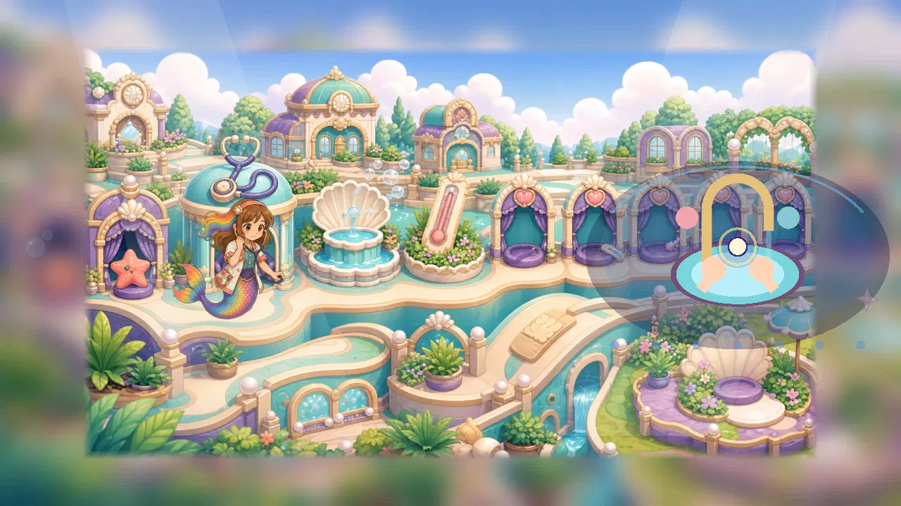
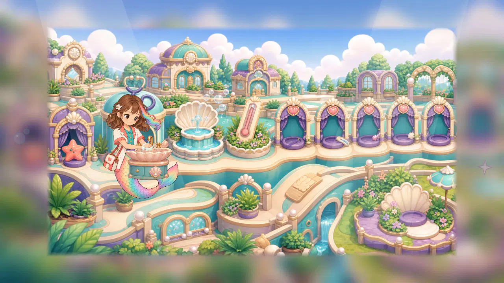
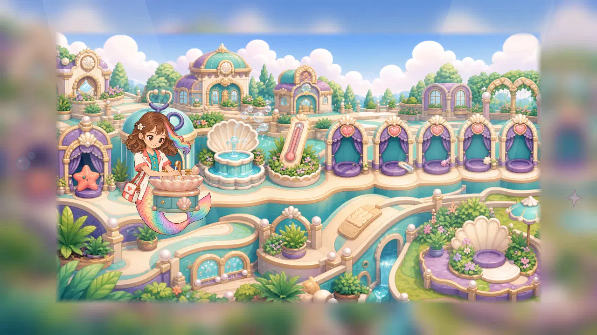
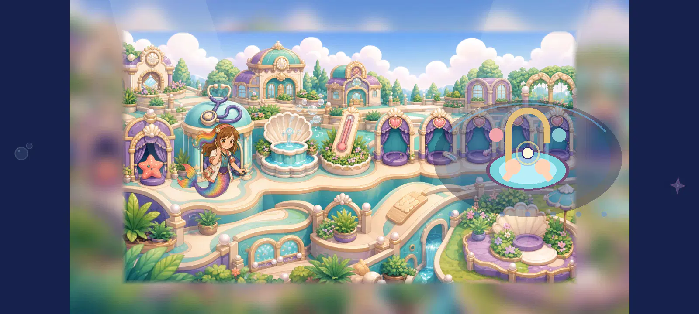
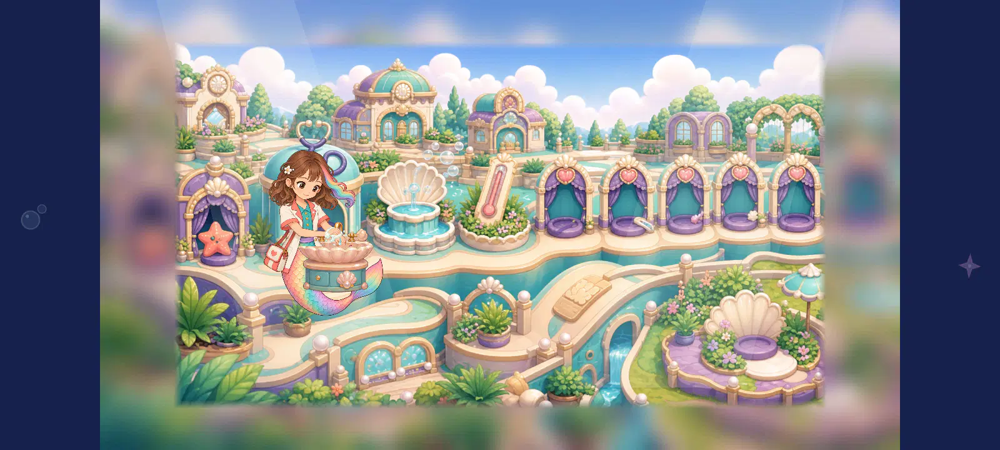

doctor_1280_original

Static context 2.9/5 · hand contact 2.3/5 · composition 2.9/5
The actual station approach still leaves Roshan beside the room illustration and a separate procedural hand-washing panel across the screen. Her hands are not visibly working at the depicted sink. This original context remains unchanged and below floor.
788df6c6a863a282d9f539c54c88efbe93303179c46bfc68444717ea0e0c7b83doctor_1280_source0_sinky0_water0
Static context 4.4/5 · hand contact 4.4/5 · composition 4.4/5
The complete soapy reaching figure sits beside the reused shell basin with both wrists attached and the hands near the faucet. Her face, coat and satchel stay visible; the sink cabinet overlaps part of the curled tail and the busy background competes with the small work area. The unshifted basin leaves the hand cluster clearer above its front rim. With water off, the still pose reads as hands held over the basin, but does not establish running water, rubbing, rinsing or a completed action.
7805226f9d05d894569fd22fed86b277b990d2652c7efc10cfba0c1044981170doctor_1280_source0_sinky0_water1
Static context 4.2/5 · hand contact 4.4/5 · composition 4.4/5
The complete soapy reaching figure sits beside the reused shell basin with both wrists attached and the hands near the faucet. Her face, coat and satchel stay visible; the sink cabinet overlaps part of the curled tail and the busy background competes with the small work area. The unshifted basin leaves the hand cluster clearer above its front rim. The test water line is largely hidden behind the hand pair/foam. At the full native game view the on/off difference is too subtle to communicate a clear stream from the tap over the hands into the basin. Sparse graphic drawing alone does not pass the washing consequence.
6bc2a2f2469c2b25f51f469de032808d93645b07ab8def62992e946e3a0bf29ddoctor_1280_source0_sinky-10_water0
Static context 4.3/5 · hand contact 4.4/5 · composition 4.3/5
The complete soapy reaching figure sits beside the reused shell basin with both wrists attached and the hands near the faucet. Her face, coat and satchel stay visible; the sink cabinet overlaps part of the curled tail and the busy background competes with the small work area. The higher sink trims more of the lower fingers at its front rim. With water off, the still pose reads as hands held over the basin, but does not establish running water, rubbing, rinsing or a completed action.
88f5938e69d084b322ee21fd2daec17cd47f01443a904353767b8424c294bd10doctor_1280_source0_sinky-10_water1

Static context 4.2/5 · hand contact 4.4/5 · composition 4.3/5
The complete soapy reaching figure sits beside the reused shell basin with both wrists attached and the hands near the faucet. Her face, coat and satchel stay visible; the sink cabinet overlaps part of the curled tail and the busy background competes with the small work area. The higher sink trims more of the lower fingers at its front rim. The test water line is largely hidden behind the hand pair/foam. At the full native game view the on/off difference is too subtle to communicate a clear stream from the tap over the hands into the basin. Sparse graphic drawing alone does not pass the washing consequence.
877d21d2e3f04a71b917da453f3cd62c8c4f782d993416352f16d72de551e60adoctor_1280_source1_sinky0_water0
Static context 4.4/5 · hand contact 4.4/5 · composition 4.4/5
The complete bare-hand clean ending sits beside the reused shell basin with both wrists attached and the hands near the faucet. Her face, coat and satchel stay visible; the sink cabinet overlaps part of the curled tail and the busy background competes with the small work area. The unshifted basin leaves the hand cluster clearer above its front rim. With water off, the still pose reads as hands held over the basin, but does not establish running water, rubbing, rinsing or a completed action.
1e8df73b5ecc1cc164c5b53482886c96613cb9320ea6b5c3a16db4cdcc6f2f0bdoctor_1280_source1_sinky0_water1
Static context 4.2/5 · hand contact 4.4/5 · composition 4.4/5
The complete bare-hand clean ending sits beside the reused shell basin with both wrists attached and the hands near the faucet. Her face, coat and satchel stay visible; the sink cabinet overlaps part of the curled tail and the busy background competes with the small work area. The unshifted basin leaves the hand cluster clearer above its front rim. The test water line is largely hidden behind the hand pair/foam. At the full native game view the on/off difference is too subtle to communicate a clear stream from the tap over the hands into the basin. Sparse graphic drawing alone does not pass the washing consequence.
8ec54e1c61fdbf52614c21647ea49ddf000f61a4b1fab3399dc5fe537a29c494doctor_1280_source1_sinky-10_water0
Static context 4.3/5 · hand contact 4.4/5 · composition 4.3/5
The complete bare-hand clean ending sits beside the reused shell basin with both wrists attached and the hands near the faucet. Her face, coat and satchel stay visible; the sink cabinet overlaps part of the curled tail and the busy background competes with the small work area. The higher sink trims more of the lower fingers at its front rim. With water off, the still pose reads as hands held over the basin, but does not establish running water, rubbing, rinsing or a completed action.
817be1341bc0a26ceab88ec81a862f99dcac66d893880496df5edce39bdebe12doctor_1280_source1_sinky-10_water1

Static context 4.2/5 · hand contact 4.4/5 · composition 4.3/5
The complete bare-hand clean ending sits beside the reused shell basin with both wrists attached and the hands near the faucet. Her face, coat and satchel stay visible; the sink cabinet overlaps part of the curled tail and the busy background competes with the small work area. The higher sink trims more of the lower fingers at its front rim. The test water line is largely hidden behind the hand pair/foam. At the full native game view the on/off difference is too subtle to communicate a clear stream from the tap over the hands into the basin. Sparse graphic drawing alone does not pass the washing consequence.
44272699d4a631034f91c138ab6b27d1615c69df94f9e18f1eb7b868af17957ddoctor_1600_original

Static context 2.9/5 · hand contact 2.3/5 · composition 2.9/5
The actual station approach still leaves Roshan beside the room illustration and a separate procedural hand-washing panel across the screen. Her hands are not visibly working at the depicted sink. This original context remains unchanged and below floor.
89ccd266d734f3b170083eecee1946cd899a2fb1ab7c46a0a2dae43b4fcb88a1doctor_1600_source0_sinky0_water0
Static context 4.4/5 · hand contact 4.4/5 · composition 4.4/5
The complete soapy reaching figure sits beside the reused shell basin with both wrists attached and the hands near the faucet. Her face, coat and satchel stay visible; the sink cabinet overlaps part of the curled tail and the busy background competes with the small work area. The unshifted basin leaves the hand cluster clearer above its front rim. With water off, the still pose reads as hands held over the basin, but does not establish running water, rubbing, rinsing or a completed action.
700717da30bd0b33e0cc3361c1858347e512d1a99d8a222c770eb96c310b7c7ddoctor_1600_source0_sinky0_water1

Static context 4.2/5 · hand contact 4.4/5 · composition 4.4/5
The complete soapy reaching figure sits beside the reused shell basin with both wrists attached and the hands near the faucet. Her face, coat and satchel stay visible; the sink cabinet overlaps part of the curled tail and the busy background competes with the small work area. The unshifted basin leaves the hand cluster clearer above its front rim. The test water line is largely hidden behind the hand pair/foam. At the full native game view the on/off difference is too subtle to communicate a clear stream from the tap over the hands into the basin. Sparse graphic drawing alone does not pass the washing consequence.
51800c3dead325f4acf12923e12b190a4553641613b973a44dd28877de056eb9doctor_1600_source0_sinky-10_water0
Static context 4.3/5 · hand contact 4.4/5 · composition 4.3/5
The complete soapy reaching figure sits beside the reused shell basin with both wrists attached and the hands near the faucet. Her face, coat and satchel stay visible; the sink cabinet overlaps part of the curled tail and the busy background competes with the small work area. The higher sink trims more of the lower fingers at its front rim. With water off, the still pose reads as hands held over the basin, but does not establish running water, rubbing, rinsing or a completed action.
f3be190c4438dc02b62a8e0261a99f25320c9efbb17dcaba6342c1ea6af7a238doctor_1600_source0_sinky-10_water1
Static context 4.2/5 · hand contact 4.4/5 · composition 4.3/5
The complete soapy reaching figure sits beside the reused shell basin with both wrists attached and the hands near the faucet. Her face, coat and satchel stay visible; the sink cabinet overlaps part of the curled tail and the busy background competes with the small work area. The higher sink trims more of the lower fingers at its front rim. The test water line is largely hidden behind the hand pair/foam. At the full native game view the on/off difference is too subtle to communicate a clear stream from the tap over the hands into the basin. Sparse graphic drawing alone does not pass the washing consequence.
4a45fd3c518dde5d5e0ce4048dd6e8631f4587d5fa42ccdbece3a962b1aabebbdoctor_1600_source1_sinky0_water0
Static context 4.4/5 · hand contact 4.4/5 · composition 4.4/5
The complete bare-hand clean ending sits beside the reused shell basin with both wrists attached and the hands near the faucet. Her face, coat and satchel stay visible; the sink cabinet overlaps part of the curled tail and the busy background competes with the small work area. The unshifted basin leaves the hand cluster clearer above its front rim. With water off, the still pose reads as hands held over the basin, but does not establish running water, rubbing, rinsing or a completed action.
bd0d60a3c0a9482a17f194faf3fc02a202f2dece87f59ad6fc8a53aefb6914eedoctor_1600_source1_sinky0_water1
Static context 4.2/5 · hand contact 4.4/5 · composition 4.4/5
The complete bare-hand clean ending sits beside the reused shell basin with both wrists attached and the hands near the faucet. Her face, coat and satchel stay visible; the sink cabinet overlaps part of the curled tail and the busy background competes with the small work area. The unshifted basin leaves the hand cluster clearer above its front rim. The test water line is largely hidden behind the hand pair/foam. At the full native game view the on/off difference is too subtle to communicate a clear stream from the tap over the hands into the basin. Sparse graphic drawing alone does not pass the washing consequence.
de798397886900d0c1738fbaf69d5474ab3671d69200f4e3f070ea5eb897a479doctor_1600_source1_sinky-10_water0
Static context 4.3/5 · hand contact 4.4/5 · composition 4.3/5
The complete bare-hand clean ending sits beside the reused shell basin with both wrists attached and the hands near the faucet. Her face, coat and satchel stay visible; the sink cabinet overlaps part of the curled tail and the busy background competes with the small work area. The higher sink trims more of the lower fingers at its front rim. With water off, the still pose reads as hands held over the basin, but does not establish running water, rubbing, rinsing or a completed action.
c7144338f89d312b3f9b1123c2fa7938e84de9404b9aefcfce9545cbc8b5832ddoctor_1600_source1_sinky-10_water1
Static context 4.2/5 · hand contact 4.4/5 · composition 4.3/5
The complete bare-hand clean ending sits beside the reused shell basin with both wrists attached and the hands near the faucet. Her face, coat and satchel stay visible; the sink cabinet overlaps part of the curled tail and the busy background competes with the small work area. The higher sink trims more of the lower fingers at its front rim. The test water line is largely hidden behind the hand pair/foam. At the full native game view the on/off difference is too subtle to communicate a clear stream from the tap over the hands into the basin. Sparse graphic drawing alone does not pass the washing consequence.
c72ff42de5503c6ec18a5be85f764d35e8b4e4b392dd4c53472d716005e15cb7